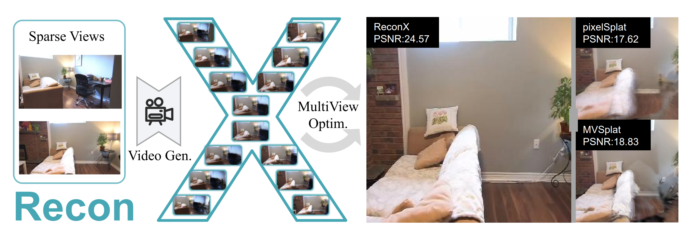

Advancements in 3D scene reconstruction have transformed 2D images from the real world into 3D models, producing realistic 3D results from hundreds of input photos. Despite great success in dense-view reconstruction scenarios, rendering a detailed scene from insufficient captured views is still an ill-posed optimization problem, often resulting in artifacts and distortions in unseen areas. In this paper, we propose ReconX, a novel 3D scene reconstruction paradigm that reframes the ambiguous reconstruction challenge as a temporal generation task. The key insight is to unleash the strong generative prior of large pre-trained video diffusion models for sparse-view reconstruction. However, 3D view consistency struggles to be accurately preserved in directly generated video frames from pre-trained models. To address this, given limited input views, the proposed ReconX first constructs a global point cloud and encodes it into a contextual space as the 3D structure condition. Guided by the condition, the video diffusion model then synthesizes video frames that are both detail-preserved and exhibit a high degree of 3D consistency, ensuring the coherence of the scene from various perspectives. Finally, we recover the 3D scene from the generated video through a confidence-aware 3D Gaussian Splatting optimization scheme. Extensive experiments on various real-world datasets show the superiority of our ReconX over state-of-the-art methods in terms of quality and generalizability.